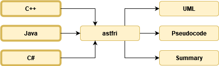

Záverečné práce dostupné v aktuálnom akademickom roku. Ak máte o niektorú z nich záujem, kontaktujte ma prostredníctvom MS Teams. Témy je možné po dohode upraviť alebo tiež vymyslieť úplne novú tému.
Porovnanie alternatívných implementácií kontajnerov zo štandardnej knižnice jazyka C++
Štandardná knižnica jazyka C++ obsahuje implementácie základných abstraktných údajových typov (AUT):
ktoré pokrývajú väčšinu bežných prípadov použitia. Okrem vyššie uvedených existuje množstvo otvorených knižních, ktoré poskytujú alternatívne a rozšírené implementácie. Príkladom je súbor knižníc Boost alebo knižnice väčších spoločností ako napr. Facebook a Google. Cieľom práce je porovnať vybrané** implementácie AUT zo štandardnej knižnice s alternatívnymi implementáciami z uvedených (a iných) knižníc. Pri porovnaní je potrebné zamerať sa na:
rozhranie – určiť ako jednoduché je vymeniť štandardnú implementáciu za alternatívnu;
výkonnosť – porovnať implementácie z pohľadu rýchlosti ich operácií;
spôsob inštalácie – inštalácia novej knižnice môže byť pomerne komplikovaný proces, čo môže výrazne ovplyvniť vymeniteľnosť štandardnej knižnice.
* Nejde o AUT, ale z pohľadu jazyka C++ spĺňa definíciu kontajnera. Zároveň ide o jeden z najpoužívanejších kontajnerov, preto je v zozname zahrnutý.
** Porovnanie všetkých implementácií je nad rámec jednej práce. Preto je potrebné najprv vhodne vybrať porovnávané implementácie AUT. Výberu môže predchádzať napr. analýza početnosti použitia vo veľkých otvorených projektoch.
Bc.
CLI aplikácia, dokumentácia
C++
Modul knižnice astfri na načítanie zdrojového kódu jazyka [podľa výberu]
Knižnica astfri slúži na abstraktnú reprezentáciu zdrojového kódu vo forme abstraktného syntaktického stromu (AST z angl. “Abstract Syntax Tree”). Vznika v rámci riešenia bakalárskej práce, ktorá bola úspešne obhájená v roku 2024. V aktuálnej verzii obsahuje knižnica hlavný modul implementujúci AST a jednoduchý modul demonštrujúci transformáciu zdrojového kódu jazyka C++ do abstraktnej reprezentácie.

Štruktúra knižnice astfri
Počiatočnou motiváciou pre vývoj knižnice je ďalšia transformácia abstraktnej reprezetnácie do rôznych foriem výstpu, ako napríklad pseudokód alebo UML diagram. Cieľom práce je implementovať modul knižnice, ktorý umožní načítať zdrojový kód vybraného programovacieho jazyka (C++, Java, C#, Python, JavaScript, …) do štruktúr AST definovaných v hlavnom module knižnice. Autor vyššie uvedenej práce uvádza dva prístupy k implementácii takéhoto modulu. Prvý pracuje so serializáciou a druhý využíva knižnicu na generovanie parserov v jazyku C. Jedným z prvých krokov riešenia práce je preto oboznámiť sa s oboma prístupmi a jeden z nich vybrať.
Táto práca rieši časť väčšieho projektu, v ktorom bude možné pokračovať v rámci projektovej výučby na inžinierskom štúdiu.
Bc., Ing.
knižnica
Vybraný programovací jazyk / C++
Porovnanie implementácií tabuliek s rozptýlenými záznamami v jazyku C++
Abstraktný údajový typ (AUT) tabuľka patrí k často používaným údajovým typom. Charakteristickou operáciou tohto AUT je sprístupnenie prvku podľa kľúča. Jednou z najčastejšie používaných implementácií je tabuľka s rozptýlenými záznamami (hešovacia tabuľka), ktorá ponúka konštantné časové zložitosti operácií. Reálny výkon tabuľky je však podmienený mechanizmom riešenia kolízií a kvalitou hešovacej funkcie. Cieľom bakalárskej práce je porovnať riešenie kolízií otvorenou adresáciou a zreťazovaním. Prakticky pôjde o porovnanie implementácie zo štandardnej knižnice (std::unordered_map) s implementáciami z otvorených knižníc.
Bc.,
CLI aplikácia, dokumentácia
C++
Nástroj na automatické testovanie preložiteľnosti kódu roznymi verziami kompilátora jazyka C++
Štandard jazyka C++ definuje vlastnosti jazyka a obsah štandardnej knižnice. Nová verzia štandardu je vydávaná každé tri roky. Aktuálna verzia štandardu nesie označenie C++23 a pripravovaná verzia bude označená C++26. Existuje viacero implementácií jazyka (kompilátor + štandardná knižnica), z ktorých najrozšírenejšie sú g++, clang a MSVC. Tieto (a všetky ostatné) sa postupne snažia implementovať vlastnosti z nových štandardov, ako môžeme prehľadne vidieť na stránke cppreference. Z tohto prehľadu je zrejmé, že podpora nových vlastností sa naprieč kompilátormi líši.
Pri vývoji a dokumentovaní knižníc je dôležité stanoviť minimálnu verziu kompilátora (ideálne všetkých troch vyššie uvedených), ktorá je potrebná na skompilovanie knižnice. Cieľom práce je vytvoriť nástroj, ktorý automatizuje kompilovanie projektu rôznymi kompilátormi a rôznymi verziami týchto kompilátorov. Výstupom práce bude klient-server aplikácica, ktorá bude nasadená zatiaľ iba interne na katedrovom serveri. Rozsah tejto práce je pomerne veľký. Presný obsah práce sa preto dohodne až na konzultácii.
Bc., Ing.
knižnica, CLI aplikácia
C++, Linux
Nástroj na správu nástrojov jazyka C++
Cieľom práce je implementovať nástroj podobný nástroju ghcup pre ekosystém jazyka C++. Nástroj by mal umožniť inštalovať a spravovať verzie nástrojov:
cmake,
gcc,
clang, clang-tidy, clang-format.
Bc., Ing.
CLI aplikácia
vybraný programovací jazyk
Rozšírenie knižnice TeDDy pre binárne rozhodovacie diagramy s potlačenou nulou
Binárny rozhodovací diagram (BDD z angl. “Binary Decision Diagram”) je orientovaný acyklický graf, pomocou ktorého pokážeme efektívne reprezentovať Boolovské funkcie. Boolovské funkcie nachádzajú uplatnenie v rôznych oblastiach matematiky a informatiky. Jedným z uplatnení je reprezentácia množín, kedy množinu popisujeme tzv. charakteristickou funkciou, ktorá má podobu Boolovskej funkcie. Charakteristickú funkciu teda môžeme reprezentovať pomocou BDD. Napriek tomu, že BDD je veľmi efektívnou reprezentáciou Boolovskej funkcie, dokážeme v špecifickom prípade reprezentácie množín reprezentáciu ešte viac zefektívniť použitím špeciálneho typu BDD a to binárneho rozhodovacieho diagramu s potlačenou nulou (ZDD z angl. “Zero-suppressed Decision Diagram”). V súčasnosti máme na katedre C++ knižnicu TeDDy, v ktorej sú implementované klasické BDD. Cieľom práce je rozšíriť knižnicu o možnosť vytvárať a pracovať so ZDD. Rozšírenie bude postavené nad jadrom existujúcej knižnice a bude sa zameriavať na implementáciu základných množinových operácií ako napr. zjednotenie, prienik, rozdiel, …